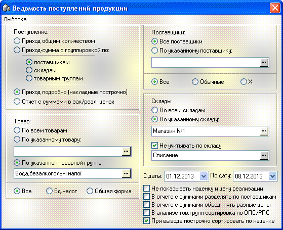
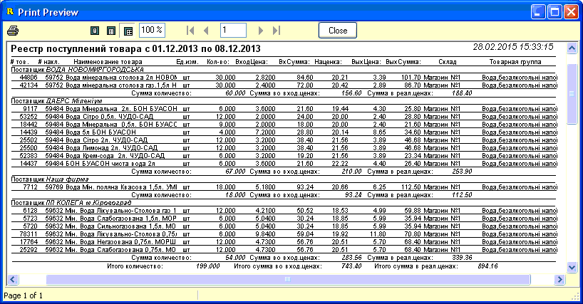
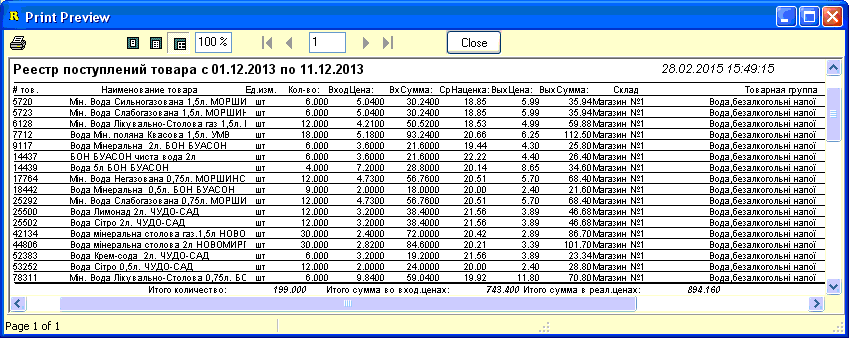
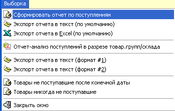
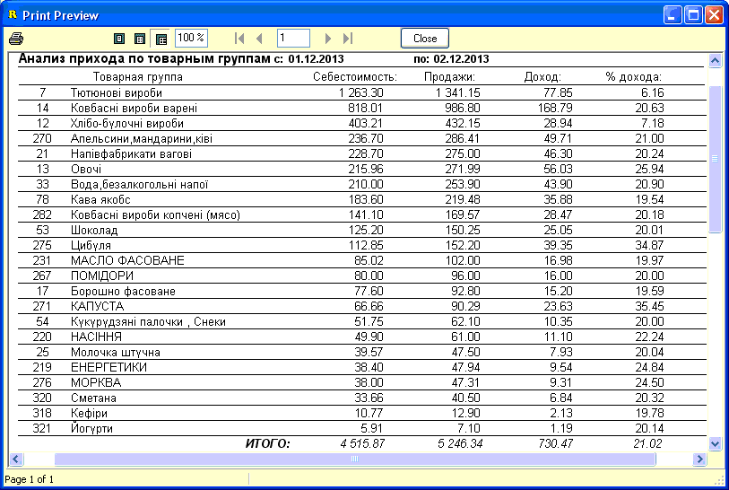

- Данный отчет позволяет в кратком или в
развернутом виде получить информацио о поступившем на склады предприятия
товаре. Отчет может формироваться как в зависимости от критериев отбра,
указанных на форме, так и содержит готовые отчеты в главном меню. Рассмотрим
параметры отбора отчета подробнее.
- 
- Панели "Товар", "Поставщики", "Склады", а также
календарики "С даты/По дату" - используются для указания необходимых
критериев отбора (пример на рисунке выше).
- Панель "Поступление" используется для
указания в каком виде должен быть сформирован отчет. Для вывода отчета по
указанным критериям используется первый пункт главного меню "Сформировать
отчет по поступлениям".
- 1. Приход общим количеством -
просто отобразит диалоговое окно с суммарным количеством поступившего товара.
Используется редко.
- 2. Приход сумма с группировкой по:
поставщикам/складам/товарным группам - выводит отчет по суммарному
количеству поступившего товара. Вывод в два столбца, для экономии бумаги.
Внизу показан пример отчета с группировкой по поставщикам.

- 3. Приход подробно (накладные построчно)
- выводит отчет с количеством и стоимостью товара, по записям в
приходных накладных. Строки не объединяются, выводятся так как они поступали.
Группировка по "поставщикам/складам/товарным группам" предыдущей опции
используется и для этого типа отбора. Для отчета также работают две опции
справа формы: "Не показывать наценку и цену реализации" и "При выводе
построчно сортировать по наценке". Пример отчета показан на рисунке ниже
(группировка по поставщику).
- 
- 4. Отчет с суммами в зак/реал. ценах
- выводит отчет просуммированным количеством товара и суммой его
закуп/реализ. стоимости, цена входящая усредняется. Цена реализации
усредняется если установлен флажек-опция "В отчете с суммами объединять разные
цены". Если установлен флажек "В отчете с суммами разделять по
поставщикам", то выборка расщепится и по этому признаку, а название поставщика
будет выводится последним столбцом.
- 
- В главном меню формы также доступны несколько
готовых отчетов. Рассмотрим их подробнее.
- 
- Отчет-анализ поступлений в разрезе
товар.групп/склада - предусматривает лишь использование дат и склада
указанных на форме. Также принимает участи опция "В анализе тов.групп
сортировка по ОПС/РПС" - если установлено, то означает сортировку по
нумерации отчетности товарных групп для предприятий системы потребительской
кооперации (значение проставляется в карточке товарной группы соответствующего
справочника - см.раздел справки "Справочники/Товарные группы"). Если опция не
установлена, то отчет сортируется в порядке убывания закупочной стоимости.
Ниже, на рисунке, показан пример такого отчета.
- 
- Товары не
поступавшие после конечной даты - использует для выборки только
календарик "По дату" из всех опций на форме. Отчет служит для отслеживания
старых товаров, "мусора", дубликатов, определения товаров, которые можно
пометить скрытыми и т.д.
- Товары никогда не поступавшие -
поиск товаров, которые никогда не приходовались. Список затем используется для
переименования таких товаров на новые или их удаления.